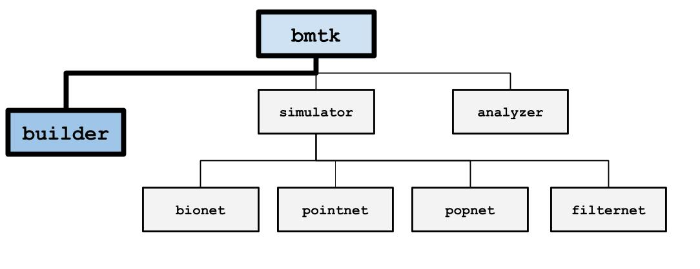
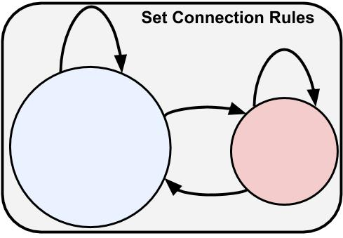
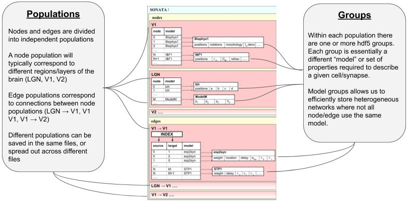

Building brain network models with BMTK Network Builder#
{kind=link}

The BMTK Network Builder (bmtk.builder.NetworkBuilder) is a submodule
of BMTK that allows for building and saving brain network models across different levels-of-resolution. It is a
Python library that allows for the creation large-scale, detailed, heterogeneous networks with only a few function calls.
Although an integral component of BMTK is to help with the early phase of the modeling and simulation workflow, The BMTK Network Builder can be used independently of the BMTK Simulation and Analysis submodules. That is to say, while you can use the Network Builder to create models that will be simulated with one of the BMTK simulators engines (eg. BioNet, PointNet, etc), you can also use the BMTK Network Builder to create models that will be ran using other simulation and analysis tools, and the BMTK Simulators are capable of running networks that were created by other tools. It does this by utilizing the SONATA Network File Format. Thus the final product of a BMTK Network Builder is a set of files representing the network model: cells, synapses, models, channel mechanisms, and any other properties and attributes that the modeler requires.
The process of building a full network model can usually be broken down into four primary steps:
1. Initialize the network(s). Here all one needs is a unique name to identify the population of nodes - usually, the region being model.
2. Create the nodes (ie. cells) using the add_nodes() method.
For different types/models of cells we can use separate calls to add_nodes (often with different model parameters).
3. Create Connection rules between different subsets of nodes using add_edges()
method.
4. Finally use build() and save()
methods to build and save the model to a file.
{kind=link}
1. Instantiation of Network(s)#
First step is to instantiate a cell population network using the NetworkBuilder class. Each network instance will have a unique population_name (chosen by the user) and one or more cells (next section). If preferable, you may also instantiate multiple networks. In such a case each network will contain its own unique set of cells (and their properties), although you can create connections between and within populations.
A modeler can choose to create a single population with many different nodes, node-types, regions, etc., or they may choose to create a network with multiple populations. The former can lead to fewer files and some efficiencies during simulation and analysis, while the latter can make it significantly easier to remove and/or add parts of a network during optimization and perturbation tasks.
For example, when creating a model of the auditory pathway we may divide it into 3 different network populations:
from bmtk.builder import NetworkBuilder
net_coch = NetworkBuilder("Cochlea")
net_aud1 = NetworkBuilder("AUD1")
net_aud2 = NetworkBuilder("AUD2")
Creating an individual net makes it easy to assign unique cells, cell-models, and attributes to each population. We can still connect them together and run all networks in one simulation.
2. Building Nodes#

Next step will be to add one or more population of nodes to a network using the add_nodes() method. For most
models each node is a single cell, although at some resolutions a node can represent a population of cells (see
PopNet).
When you call the add_nodes() method you must pass in the value of N number of individual nodes, along with any
parameters and attributes that will be required to describe/instantiate the cells.
Here we create a network to represent the mouse primary visual cortex (VISp) and call add_nodes() method to add 100
cells.
from bmtk.builder import NetworkBuilder
from bmtk.builder.auxi.node_params import positions_columnar
import numpy as np
n_nodes = 100
net = Network("VISp")
coords = positions_columnar(N=n_nodes, center=[0, 10.0, 0], max_radius=50.0, height=200.0)
net.add(
N=n_nodes,
model_type='biophysical',
morphology='Pyr.swc',
x=coords[0],
y=coords[1],
z=coords[2],
rotation_angle_xaxis=np.linspace(0.0, 360.0, n_nodes),
rotation_angle_yaxis=np.random.rand(0.0, 360.0, n_nodes),
rotation_angle_zaxis=np.random.rand(0.0, 360.0, n_nodes),
)
Other than the N parameter we can use whatever parameters we want in the ` add_nodes()` method. Some parameters are SONATA reserved keywords, like model_type and morphology and will be recognized by BMTK and other tools. But modelers can also define their own parameters as they deem appropriate.
net.add(
N=10,
parameter1='my_string',
parameter2=1.0,
parameter3=range(0, 100, 10),
...
)
You can also call add_nodes() as many times as you like with different number of cells and different parameters.
Here we make two calls to add_nodes(). First we add 100 biophysical nodes, followed by 50 point nodes.
Certain parameters, like morphology or rotation_angle don’t apply to point-type neurons so are not called.
net.add(
N=100,
model_type='biophysical',
morphology='pyr_cell.swc',
x=coords[0:100, 'x'],
y=coords[0:100, 'y'],
z=coords[0:100, 'z'],
rotation_angle_xaxis=np.linspace(0.0, 360.0, n_nodes),
rotation_angle_yaxis=np.random.rand(0.0, 360.0, n_nodes),
rotation_angle_zaxis=np.random.rand(0.0, 360.0, n_nodes),
)
net.add(
N=50,
model_type='point',
x=coords[100:150, 'x'],
y=coords[100:150, 'y'],
z=coords[100:150, 'z'],
v_reset=-60.0,
v_threshold=20.0,
)
Reserved Node Parameters#
As mentioned above the modeler can use any parameters and values they require to represent their models. The following are parameters that will be recognized and used by the BMTK simulator (but not necessarily required). For a complete list see SONATA:
reserved SONATA keywords for nodes
Name |
Description |
type |
|---|---|---|
x (or y, z) |
x (or y, z) positions of soma in cartesian coordinates |
float |
rotation_angle_xaxis (or y, z) |
rotation of the morphology around the soma |
float |
model_type |
level of representation of neurons (biophysical, point_neuron, virtual) |
string |
model_template |
String name of the neuron model template (eg, ctdb:Biophys1.hoc, nest:glif_lif, etc) |
string |
model_processing |
Directive or function that will be applied to neuron model after creation. For Allen Cell Types models use aibs_perisomatic or aibs_allactive |
string |
dynamics_params |
Channel and mechanism parameters for neuron, usually a name of a JSON or NeuronML file. Will overwrite model_template. |
string path to file or dict |
morphology |
Name of the detailed morphology file (usually SWC). |
string path to file |
note about “node_id” and “node_type_id” properties
The BMTK Network Builder will automatically assign a unique identifier(node_id) and a specific node-type (node_type_id) to each cell within a network population. However, if for some reason you need to assign the node_id and or node_type_id properties manually you are able to do so:
net.add_nodes(N=10, node_id=range(0, 10), node_type_id=0)
net.add_nodes(N=20, node_id=range(10, 30), node_type_id=1)
WE DO NOT RECOMMEND DOING SO, because clashing or inconsistent ids can affect the simulation.
Node Representation#
When NetworkBuilder.build() is called, each node is given a unique
node_id value and each type model (eg. each call to add_nodes) will also be given a node_type_id. It is possible
to set the node_id and node_type_id parameter yourself but it’s generally not a good idea.
The NetworkBuilder.nodes() will return an iterator of the nodes in a
network. By default, it returns all nodes but one can filter by specific property values. The nodes themselves can have
their properties accessed like a dictionary. For example to get all biophysically detailed inhibitory (inh) neurons:
for node in net.nodes(model_type='biophysical', ei='inh'):
x = node['position_x']
...
3. Building Edges#

After creating population of nodes we can go ahead and start creating edges between them by using the
NetworkBuilder.add_edges() method. For most models each edge
represents a synapse/junction between a source and target cell. If using PopNet, edges connect two populations of
cells (see PopNet).
BMTK and SONATA is designed for storing and simulating heterogeneous and highly optimized network models, which
means that every synaptic connection in a network may have different parameters. But rather than having to define the
millions or billions of possible synapses manually, BMTK’s add_edges() allows users to create rules and functions
for how different subsets of cells will be connected. To create a set of directed edges between two subsets of cells
you use the following:
The source and target parameters filter out sub-populations of cells.
The connectivity_rule parameter sets the number of connections between each source/target pair of cells.
Optional additional attributes to describe the connections.
net.add_edges(
source={'ei': 'inh'}, # 1
target={'ei': 'exc', 'ephys_type': 'fast_spiking'},
connection_rule=my_connection_func, # 2
dynamic_parameters='i2e.json', # 3
synaptic_model='alphaSyn',
syn_weight=1.34e-05,
delay=2.0
)
Parameters
sourceandtargetare used to filter out the subset of nodes used pre- and post-synapse, respectively. In this case, the source population consists of all inhibitory (‘ei: ‘inh’) neurons, while the target population consists only of excitatory (‘ei’: ‘exc’) fast-spiking neurons. If the source or target is not specified then all possible nodes will be used.connection_ruleis used to determine the number of connections between each source and target node. If the value is given as an integer N then all possible source/target pairs will have N different connections. You can also pass in a list-of-list, a matrix, or a user-defined function. A user-defined function offers the most functionality and will be further described in the next section.dynamic_parameters,synaptic_model,syn_weight, anddelayare all shared connection parameters. Like with nodes, modelers can choose whatever parameters they deem best represent their network. A list of useful parameters pre-defined by BMTK and SONATA is described below.
The source and target may be between subsets of cells within a single population, or it may be between two different
populations. For example, you may have a separate population for VISp and Thalamus cells, and want to create
connections from the Thalamus ON-OFF cells onto the VISp excitatory cells. The method call will look mostly the same,
except instead of passing in dictionaries to filter the source and target we used the
NetworkBuilder.nodes() method:
net_visp.add_edges(
source=net_thalamus.nodes(model='on-off'),
target=net_visp.nodes(ei='exc'),
connection_rule=my_connection_func,
dynamic_parameters='on_off_exc.json',
synaptic_model='alphaSyn',
syn_weight=1.34e-05,
delay=2.0
)
The Network Builder is also capable of creating multi-graph networks where there are multiple edge-types between
each source/target pair. To do so you just need to call add_edges() multiple times with different properties and/or
attribute values.
Connection rules#
The connection_rule parameter of add_edges() method will usually be a user-defined function (but may also be an integer,
list-of-lists, or matrix). The function’s first two parameters will be the source and target, Node objects whose properties
can be accessed like a dictionary. It should return an integer N for the number of connections between the source and
target. The value will be 0 or None if there is no connection.
def my_connection_func(source, target):
src_pos = source['position']
trg_pos = target['position']
...
return N_syns
net.add_edges(
source={'ei': 'inh'}, target={'ei': 'exc', 'ephys_type': 'fast_spiking'},
connection_rule=my_connection_func,
dynamic_parameters='i2e.json',
...
)
If the connection_rule function requires additional arguments, use the connection_params option:
def my_connection_func(source, target, min_edges, max_edges):
src_pos = source['position']
trg_pos = target['position']
...
return N_syns
net.add_edges(
source={'ei': 'inh'}, target={'ei': 'exc', 'ephys_type': 'fast_spiking'},
connection_rule=my_connection_func,
connection_params={'min_edges': 0, 'max_edges': 20},
dynamic_parameters='i2e.json',
...
)
When NetworkBuilder.build() is executed, my_connection_func() will be
automatically called for all possible source/target pairs of nodes and the connectivity matrix will be called.
Sometimes it may be more efficient or necessary to set all incoming (or outgoing) connections in one function. For
example, we may need to limit the total number of synapses onto a target. The iterator parameter allows the modeler to
change the signature and return values of their connection_rule function. By setting iterator to all_to_one,
it will pass in a list of all N source neurons instead of passing in a single source neuron, and will expect a
corresponding list of size N.
def bulk_connection_func(sources, target):
trg_pos = target['position']
syn_list = np.zeros(len(sources))
for source in sources:
src_pos = source['position']
...
return syn_list
There is also an all_to_one iterator option that will pair each source node with a list of all available target nodes.
Individual Edge Properties (The ConnectionMap)#
Sometimes it is necessary for each edge to have unique property values. For example, the individual syn_weight value for
each synapse may vary depending on the location and type of the pre-and post-synaptic nodes. With nodes,
you can pass in a list or array of size N for each node. But when edges are built using a connection_rule function
the exact number of connections is not known in advance.
Each call to add_edges returns a ConnectionMap object. The
ConnectionMap.add_properties() method allows us to
add individual properties for each edge using our own user-defined functions. Like with our connection_rule function,
the connection_map rule function takes in a source and target node and returns a corresponding value:
def set_syn_weight_by_dist(source, target):
src_pos, trg_pos = source['position'], target['position']
...
return syn_weight
cm = net.add_edges(....)
cm.add_properties('syn_weight', rule=set_syn_weight_by_dist, dtypes=float)
cm.add_properties('delay', rule=lambda *_: np.random.rand(0.01, 0.50), dtypes=float)
If the rule requires extra arguments we can use the rule_params option:
def set_syn_weight_by_dist(source, target, min_weight, max_weight):
src_pos, trg_pos = source['position'], target['position']
...
return syn_weight
cm.add_properties(
name='syn_weight',
rule=set_syn_weight_by_dist,
rule_params={'min_weight': 1.0e-06, 'max_weight': 1.0e-04},
dtypes=float
)
It is also possible to set multiple parameters in a single function. For example, for each synapse, we may want to set
the distance between the soma and the neuronal area (soma, apical dendrites, basal dendrites, etc). To do so our name
and dtypes parameters take a list, and our rule function now returns two values:
def set_target_location(source, target):
...
return syn_region, syn_dist
cm.add_properties(
name=['syn_region', 'syn_dist'],
rule=set_syn_weight_by_dist,
dtypes=[str, float]
)
Useful Edge Parameters#
reserved SONATA keywords for edges
Name |
Description |
|---|---|
syn_weight |
synaptic weight |
delay |
synaptic delay, in ms |
model_template |
String name of the template to create an object from parameters in dynamics_params |
dynamics_params |
dynamic parameter overrides for edges |
efferent_section_id |
location of (NEURON) section where the connection will target |
efferent_section_pos |
distance within the (NEURON) section where synapse will target |
target_sections |
A list of neuronal sections where the synapse will target (soma, axon, apical, basal). When used in place of section_id, BioNet will randomly select a section on the target neuron |
distance_range |
A range in microns of the distance from the soma, used along with target_sections param to randomly target certain areas of the post-synaptic neuron. |
weight_function |
Name of the detailed morphology file (usually SWC). |
4. Building and Saving the Model#

Once all calls to add_nodes and add_edges have been made, use the build() method to actually complete and fully
instantiate the network. Certain accessor functions, like
NetworkBuilder.nodes() and
NetworkBuilder.edges() will not work until all the edges have been
completed. Depending on the size of the network, the complexity of the connectivity rules, and the computational resources available, it can take anywhere from
less than a second to days to build the full model.
The NetworkBuilder.save(output_dir=’/path/to/output/net/’) method will
write the network to a disk in SONATA format at the given output_dir path. By default nodes and edges will be written to
different files using the network names as file names. The
NetworkBuilder.save_nodes() and
NetworkBuilder.save_edges() functions may also be used to only write
out the nodes or the edges, respectively.
Network Format#
This is a brief overview of how NetworkBuilder saves the network’s nodes and edges files. As mentioned, BMTK uses the SONATA format, and more in-depth descriptions may be found here. Opening the HDF5 file will require a hdf browser like HDFView, or a library like h5py. You can also use pySONATA or libSONATA, which are API’s for reading in SONATA files.
{kind=link}

Additional Resources and Guides#
Tutorials and Guides#
BMTK Builder - A Quick Introduction
A step-by-step workable notebook that goes through the process of building a small but usable biophysical network model.
Multi-Population Recurrent Networks with BioNet
Notebook example showing the full processes of:
Building a biophysical network with multiple cells and cell-types.
Executing network model with BioNet.
Analyzing simulation results.
Multi-Population Recurrent Networks with PointNet
An example of building and simulating a network of point neurons and running simulations on the model using PointNet
Cell-Placement Guide
A useful guide on different ways to generate coordinates for cells when building a model. Including using NRRD files downloaded from the Allen Common Coordinate Framework
Advanced Features#
Getting node and cell properties from a network
Filter and find specific subpopulations of nodes within a network.
Filter and find edges based on edge and source/target node properties.
Get name, status, and various properties of a network.
Importing Nodes into a network
How to import nodes from existing SONATA network files into your new network.
Advanced options for designating synaptic locations
How to easily set post-synaptic (afferent) synaptic locations on morphological detailed cells.
Options for Saving network to file
Manually setting the file path
How to write multiple networks to a single file
How to sort and index edges
File Compression
Parallizgin Network Building with MPI
How to build a network faster on a cluster or multi-core computer using MPI (Message Passing Interface)